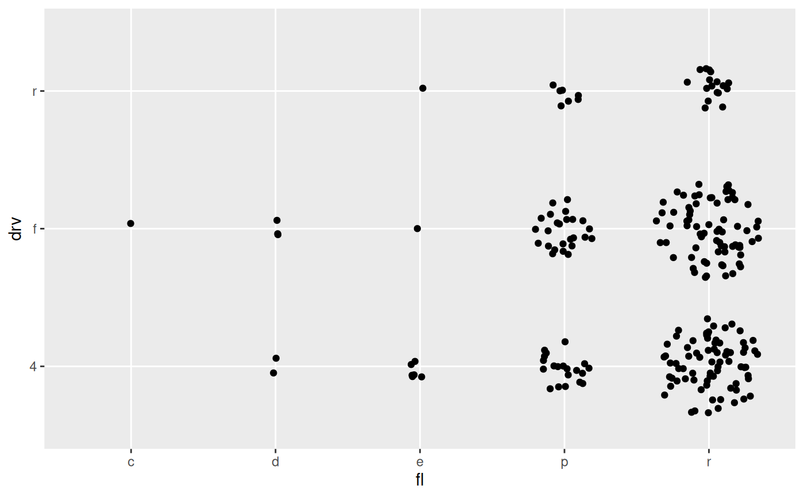

A point geom specialised for scatterplot matrices
geom_autopoint.RdThis geom is a specialisation of ggplot2::geom_point() with two changes. It
defaults to mapping x and y to .panel_x and .panel_y respectively,
and it defaults to using position_auto() to jitter the points based on the
combination of position scale types.
geom_autopoint(mapping = NULL, data = NULL, stat = "identity", position = "auto", ..., na.rm = FALSE, show.legend = NA, inherit.aes = TRUE)
Arguments
| mapping | Set of aesthetic mappings created by |
|---|---|
| data | The data to be displayed in this layer. There are three options: If A A |
| stat | The statistical transformation to use on the data for this layer, as a string. |
| position | Position adjustment, either as a string, or the result of a call to a position adjustment function. |
| ... | Other arguments passed on to |
| na.rm | If |
| show.legend | logical. Should this layer be included in the legends?
|
| inherit.aes | If |
See also
facet_matrix for how to lay out scatterplot matrices and position_auto for information about the position adjustments
Examples
# Continuous vs continuous: No jitter ggplot(mpg) + geom_autopoint(aes(cty, hwy))# Continuous vs discrete: sina jitter ggplot(mpg) + geom_autopoint(aes(cty, drv))# Discrete vs discrete: disc-jitter ggplot(mpg) + geom_autopoint(aes(fl, drv))# Used with facet_matrix (x and y are automatically mapped) ggplot(mpg) + geom_autopoint() + facet_matrix(vars(drv:fl))